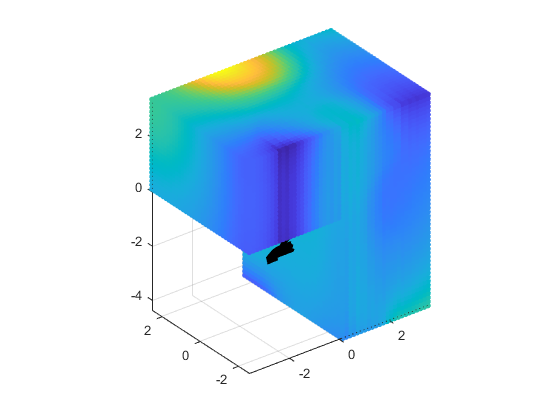
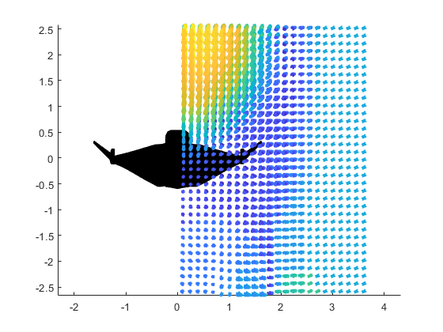

Contents
clear; % Include addpath('include\'); include();
PARAMETERS
step = 0.15; mu = 0; % Diffusive rho = 1.2; % Convective
SOLID CREATION
Load the required parameters
partable = readtable('config.dat','HeaderLines',6,'Delimiter','semi','ReadRowNames',true); parameters = join(erase(string(partable{:, :}), "'"), '', 2); % File loading vehicle = stlread(parameters(1)); unicube = stlread(parameters(3)); cube_dim = double(strsplit(parameters(4),',')); cube_zwidth = sum(double(strsplit(parameters(5),','))); % Vehicle model creation [~, ~, centroid, ~] = inertia_tensor(vehicle.Points,vehicle.ConnectivityList); VFi = vehicle.Points - centroid; FFi = unifyMeshNormals(vehicle.ConnectivityList,VFi,'alignTo','out'); [VFi, FFi] = deal(VFi*rotx(deg2rad(15))*roty(deg2rad(0))*rotz(deg2rad(0)),FFi); xdim = abs(max(VFi(:,1))-min(VFi(:,1))); ydim = abs(max(VFi(:,2))-min(VFi(:,2))); zdim = abs(max(VFi(:,3))-min(VFi(:,3)));
load('ns_3d.mat'); dat = [x u v w p]; gridx = (min(VFi(:,1))-2):step:(max(VFi(:,1))+2); gridy = (min(VFi(:,2))-2):step:(max(VFi(:,2))+2); gridz = (min(VFi(:,3))-2):step:(max(VFi(:,3))+2); % gridx = (min(dat(:,1))):step:(max(dat(:,1))); % gridy = (min(dat(:,2))):step:(max(dat(:,2))); % gridz = (min(dat(:,3))):step:(max(dat(:,3))); [actX, actY, actZ] = ndgrid(gridx(:),gridy(:),gridz(:)); % Interpolation mygrid = [actX(:), actY(:), actZ(:)]; gridU = reshape(griddatan([dat(:,1) dat(:,2) dat(:,3)],dat(:,4),mygrid),size(actX)); gridV = reshape(griddatan([dat(:,1) dat(:,2) dat(:,3)],dat(:,5),mygrid),size(actX)); gridW = reshape(griddatan([dat(:,1) dat(:,2) dat(:,3)],dat(:,6),mygrid),size(actX)); grad_p = zeros(size(gridx,2),size(gridy,2),size(gridz,2)); for ix = 1:1:size(gridx,2) for iy = 1:1:size(gridy,2) for iz = 1:1:size(gridz,2) % U component lagU = lagrangian(gridU,ix,iy,iz,step); gradU = gradient_v2(gridU,ix,iy,iz,step); % V component lagV = lagrangian(gridV,ix,iy,iz,step); gradV = gradient_v2(gridV,ix,iy,iz,step); % W component lagW = lagrangian(gridW,ix,iy,iz,step); gradW = gradient_v2(gridW,ix,iy,iz,step); grad_px(ix,iy,iz) = mu*sum(lagU)-rho*(gridU(ix,iy,iz)*gradU(1)+gridV(ix,iy,iz)*gradU(2)+gridW(ix,iy,iz)*gradU(3)); grad_py(ix,iy,iz) = mu*sum(lagV)-rho*(gridU(ix,iy,iz)*gradV(1)+gridV(ix,iy,iz)*gradV(2)+gridW(ix,iy,iz)*gradV(3)); grad_pz(ix,iy,iz) = mu*sum(lagW)-rho*(gridU(ix,iy,iz)*gradW(1)+gridV(ix,iy,iz)*gradW(2)+gridW(ix,iy,iz)*gradW(3)); end end disp(strcat("Iteration completed: ",num2str(ix)," out of ",num2str(size(gridx,2)))); end
Iteration completed: 1 out of 49 Iteration completed: 2 out of 49 Iteration completed: 3 out of 49 Iteration completed: 4 out of 49 Iteration completed: 5 out of 49 Iteration completed: 6 out of 49 Iteration completed: 7 out of 49 Iteration completed: 8 out of 49 Iteration completed: 9 out of 49 Iteration completed: 10 out of 49 Iteration completed: 11 out of 49 Iteration completed: 12 out of 49 Iteration completed: 13 out of 49 Iteration completed: 14 out of 49 Iteration completed: 15 out of 49 Iteration completed: 16 out of 49 Iteration completed: 17 out of 49 Iteration completed: 18 out of 49 Iteration completed: 19 out of 49 Iteration completed: 20 out of 49 Iteration completed: 21 out of 49 Iteration completed: 22 out of 49 Iteration completed: 23 out of 49 Iteration completed: 24 out of 49 Iteration completed: 25 out of 49 Iteration completed: 26 out of 49 Iteration completed: 27 out of 49 Iteration completed: 28 out of 49 Iteration completed: 29 out of 49 Iteration completed: 30 out of 49 Iteration completed: 31 out of 49 Iteration completed: 32 out of 49 Iteration completed: 33 out of 49 Iteration completed: 34 out of 49 Iteration completed: 35 out of 49 Iteration completed: 36 out of 49 Iteration completed: 37 out of 49 Iteration completed: 38 out of 49 Iteration completed: 39 out of 49 Iteration completed: 40 out of 49 Iteration completed: 41 out of 49 Iteration completed: 42 out of 49 Iteration completed: 43 out of 49 Iteration completed: 44 out of 49 Iteration completed: 45 out of 49 Iteration completed: 46 out of 49 Iteration completed: 47 out of 49 Iteration completed: 48 out of 49 Iteration completed: 49 out of 49
REMOVE THE NaN values from the solution
last_val = [0 0 0]; for ix = 1:1:size(gridx,2) for iy = 1:1:size(gridy,2) for iz = 1:1:size(gridz,2) if (isnan(grad_px(ix,iy,iz)) || isnan(grad_py(ix,iy,iz)) || isnan(grad_pz(ix,iy,iz))) grad_px(ix,iy,iz) = last_val(1); grad_py(ix,iy,iz) = last_val(2); grad_pz(ix,iy,iz) = last_val(3); else last_val = [grad_px(ix,iy,iz) grad_py(ix,iy,iz) grad_pz(ix,iy,iz)]; end end end end for k = 1:1:20 %{ % Own MED filtering for ix = 1:1:size(gridy,2) for iy = 1:1:size(gridx,2) for iz = 1:1:size(gridz,2) grad_px_def(ix,iy,iz) = get_median_value(grad_px,ix,iy,iz); grad_py_def(ix,iy,iz) = get_median_value(grad_py,ix,iy,iz); grad_pz_def(ix,iy,iz) = get_median_value(grad_pz,ix,iy,iz); end end end %} % Built-in MED filtering grad_px_def = medfilt3(grad_px,[5 5 5]); grad_py_def = medfilt3(grad_py,[5 5 5]); grad_pz_def = medfilt3(grad_pz,[5 5 5]); grad_px = grad_px_def; grad_py = grad_py_def; grad_pz = grad_pz_def; disp(strcat("Median filtering completed: ",num2str(k)," out of 10")); end %{ g = find(mygrid(:,1)>0); lat = gridW(:); scatter3(mygrid(g,1),mygrid(g,2),mygrid(g,3),5,lat(g,:));axis equal; %} grad_val = intgrad3(grad_px,grad_py,grad_pz,step,step,step,1); % g = find(mygrid(:,1)>0 & mygrid(:,1)<4 & mygrid(:,2)>-3 & mygrid(:,2)<3 & mygrid(:,3)>-4 & mygrid(:,3)<4); g = find(mygrid(:,3)>0 | mygrid(:,1)>0); % grad_val = sqrt(grad_px_def.^2 + grad_py_def.^2 + grad_pz_def.^2); lat = grad_val(:); scatter3(mygrid(g,1),mygrid(g,2),mygrid(g,3),20,lat(g,:),'filled');axis equal; PatchProps.FaceColor = 'k';PatchProps.EdgeColor = 'none'; PatchProps.FaceAlpha = 1; uuu = patch('Faces',FFi, 'Vertices', [VFi(:,1) VFi(:,2) VFi(:,3)], PatchProps); figure; g = find(mygrid(:,1)>0); [lat1,lat2,lat3] = deal(grad_px_def(:),grad_py_def(:),grad_pz_def(:)); quiver3D(mygrid(g,1),mygrid(g,2),mygrid(g,3),lat1(g),lat2(g),lat3(g),2,'LineWidth',3);axis equal; PatchProps.FaceColor = 'k';PatchProps.EdgeColor = 'none'; PatchProps.FaceAlpha = 1; uuu = patch('Faces',FFi, 'Vertices', [VFi(:,1) VFi(:,2) VFi(:,3)], PatchProps); %{ g = find(mygrid(:,1)>0); speed_val = sqrt(gridU(:).^2 + gridV(:).^2 + gridW(:).^2); lat = speed_val(:); scatter3(mygrid(g,1),mygrid(g,2),mygrid(g,3),5,lat(g,:));axis equal; PatchProps.FaceColor = 'k';PatchProps.EdgeColor = 'none'; PatchProps.FaceAlpha = 1; uuu = patch('Faces',FFi, 'Vertices', [VFi(:,1) VFi(:,2) VFi(:,3)], PatchProps); %} %{ g = find(mygrid(:,1)>0); quiver3D(mygrid(g,1),mygrid(g,2),mygrid(g,3),gridU(g),gridV(g),gridW(g),10,'LineWidth',3);axis equal; PatchProps.FaceColor = 'k';PatchProps.EdgeColor = 'none'; PatchProps.FaceAlpha = 1; uuu = patch('Faces',FFi, 'Vertices', [VFi(:,1) VFi(:,2) VFi(:,3)], PatchProps); %}
Median filtering completed: 1 out of 10 Median filtering completed: 2 out of 10 Median filtering completed: 3 out of 10 Median filtering completed: 4 out of 10 Median filtering completed: 5 out of 10 Median filtering completed: 6 out of 10 Median filtering completed: 7 out of 10 Median filtering completed: 8 out of 10 Median filtering completed: 9 out of 10 Median filtering completed: 10 out of 10 Median filtering completed: 11 out of 10 Median filtering completed: 12 out of 10 Median filtering completed: 13 out of 10 Median filtering completed: 14 out of 10 Median filtering completed: 15 out of 10 Median filtering completed: 16 out of 10 Median filtering completed: 17 out of 10 Median filtering completed: 18 out of 10 Median filtering completed: 19 out of 10 Median filtering completed: 20 out of 10 